Links: Anmelden über 👤 oben rechts im Menü, mit Google oder mit einem Code per E-Mail (geht auch in Bluefy) oder Passwort. Rechts: angemeldet (Testbild mit Testkonto). Profil, Einstellungen, Bestzeiten und Fahrten mit Trainer werden im Konto gespeichert, jede Fahrt mit FIT-Datei zum späteren Herunterladen. Ohne Anmeldung läuft alles wie bisher.
Oben alt, unten neu (Prüfbild ohne Gelände, rote Lackierung mit Flecken ist nur hier). Die Räder standen ca. 8 cm über den Kotflügel hinaus und im Radkasten sah man Karosserie oder Reifenreste des Modells. Jetzt sitzen sie 3,5 cm innerhalb der Kotflügelkante vor einem dunklen Radhaus. Einlenken: Lenkeinschlag kommt jetzt vor der Drehung des Autos (vorher ca. 0,7 s danach), das Auto dreht um die Hinterachse, das kurveninnere Vorderrad schlägt stärker ein.
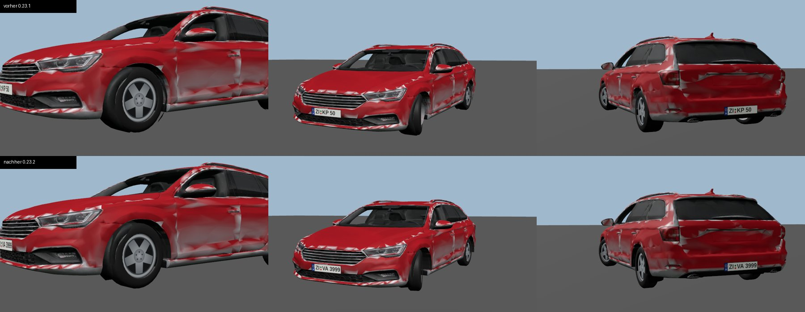
Oben: eine Jonsdorfer Treppe, alt und neu. Laut OpenStreetMap führt sie bergauf, das Gelände fällt aber; die Treppe stand oben bis 6 m in der Luft, das Wegende schwebte mit. Ein Prüfskript hat alle 29.000 Wegstücke gemessen: vorher 169 Treppen über 0,8 m in der Luft, jetzt keine. Wege folgen jetzt dem gezeichneten Gelände, an Straßen angehobene Wegenden bekommen eine Böschung. Unten: Dachschnee bei „viel Schnee“ mit Kante und Überhang an der Traufe.
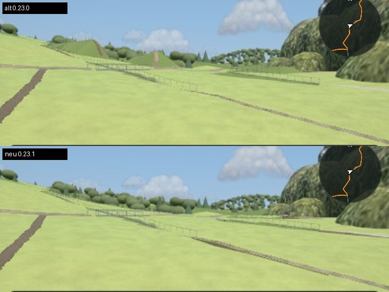
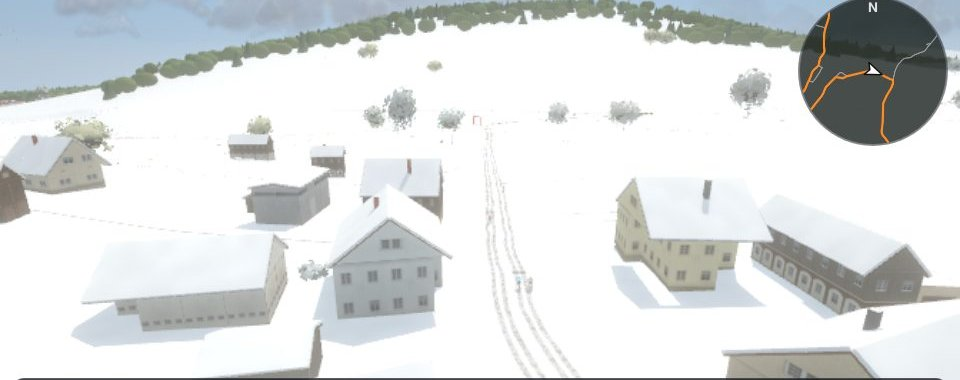
Links das Spiel: oben rechts auf 📱 tippen, dann erscheint der QR-Code mit Code. Rechts die Handy-Seite (Testbild, im Testbrowser gekoppelt): Live-Werte, Kreuzung mit beiden Abzweigen (Rechts nach Krompach gewählt), große Pfeile, Wenden, Pause, Kamera, Anzeige und Gesten. Unten die Rückmeldung vom Spiel.
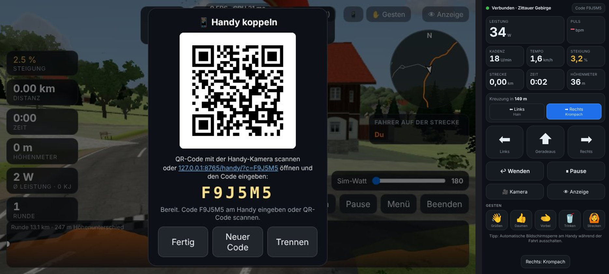
Oben: alle Tiere mit automatisch gebautem Skelett, von links nach rechts Stand, Schritt (2 Phasen), Trab (2), Galopp (3), Grasen. Reh lief vorher rückwärts, Hirsch und Kuh seitwärts. Die Gangart wechselt mit dem Tempo (Schritt, Trab, Galopp). Unten: Autos mit runden Rädern und Alufelge, Vorderräder eingeschlagen, Blinker links (vorn und hinten); rechts unten ein flüchtendes Reh im Galopp.
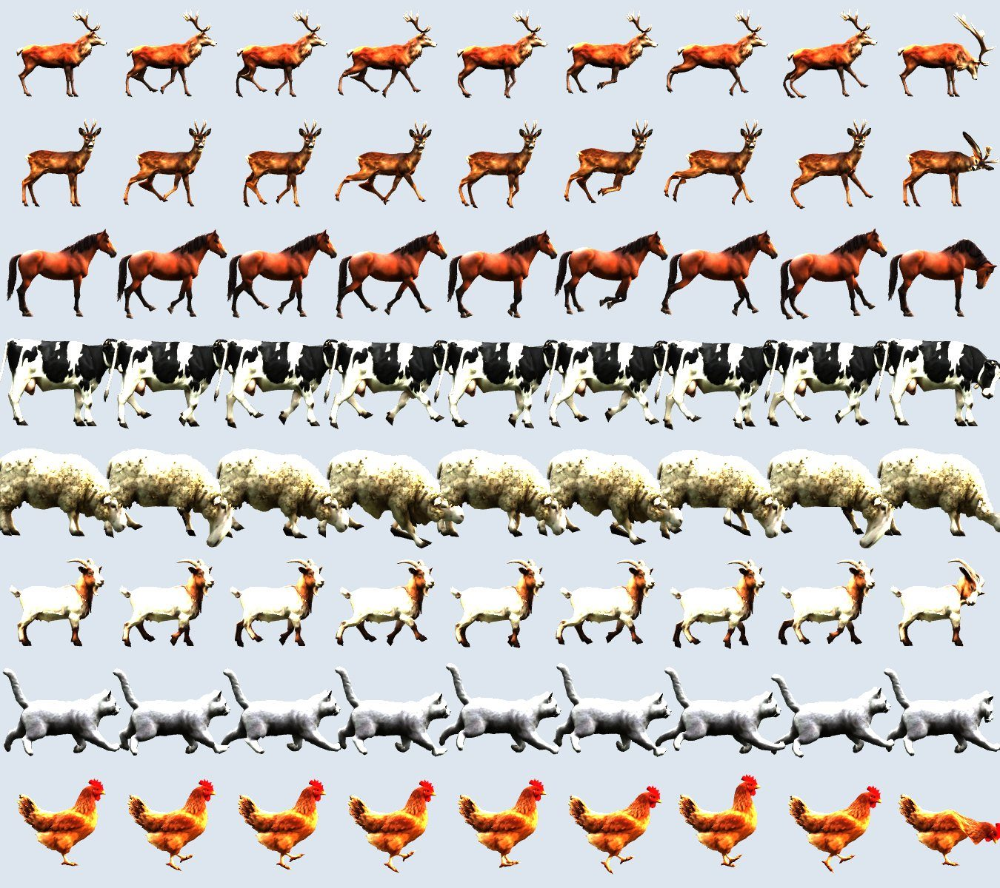
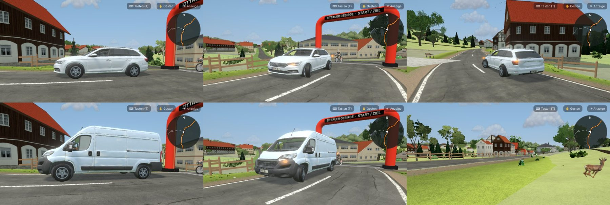
Links alt, rechts neu, gleiche Stellen. Ab ca. 60 m steht jeder Baum jetzt als Bild an seinem echten Platz (mit echter Größe, Drehung, Farbe, Licht, Nebel, Schnee). Das Bild wird beim Laden aus dem 3D-Baum gerendert, aus 8 Richtungen, damit es beim Vorbeifahren mitdreht. Alle Bild-Bäume zusammen sind ein einziger Zeichenaufruf. Am Waldrand sinkt die Zahl der vollen 3D-Bäume von ca. 500–600 auf ca. 100–140. Oben und Mitte aus Fahrerhöhe, unten aus 110 m Höhe (von oben wirken die Bild-Bäume etwas dunkler und schmaler).
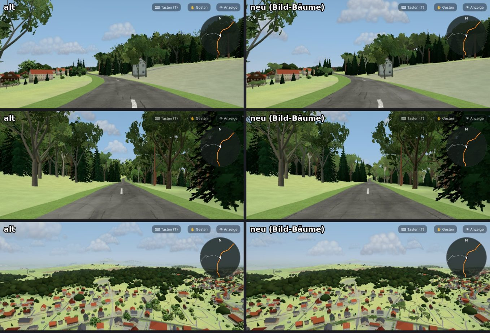
Gleiche Stelle über Jonsdorf, oben alt, unten neu. Der Wald sieht gleich aus, wird aber mit rund 100 statt rund 900 Zeichenaufrufen je Bild gezeichnet (Wolken sind Zufall). Insgesamt ca. 1.450 → 700 Zeichenaufrufe.
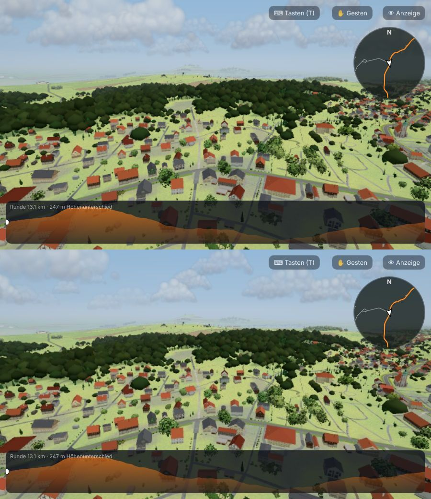
Von links nach rechts: aus dem Sattel nach vorn über das linke Pedal (unten), rechtes Bein mit leicht gebeugtem Knie hinten hoch über Sattel und Hinterrad, auf der linken Seite zum Boden, dann erst der linke Fuß vom Pedal, danach Rad greifen und schultern. Oben von links, unten schräg von vorn. Aufsteigen läuft genauso rückwärts.
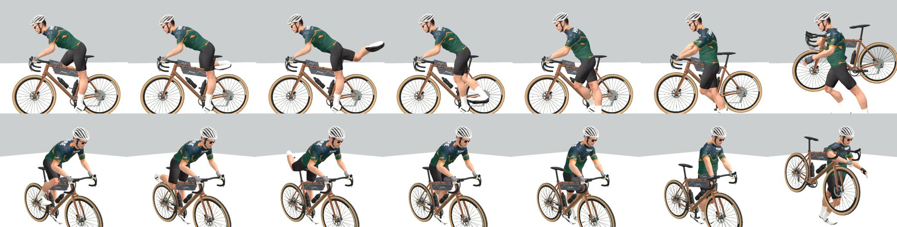
Gravel: Die Schulter liegt jetzt innen unter dem Oberrohr. Der Oberarm geht durchs Rahmendreieck (knapp 5 cm hinter dem Steuerrohr), der Ellbogen kommt außen vor dem Steuerrohr heraus, und der Unterarm läuft vorn ums Steuerrohr zurück zur Lenkerhand (knapp 10 cm vor dem Steuerrohr). Von links: dein Foto, vorne, innen nah, außen nah.
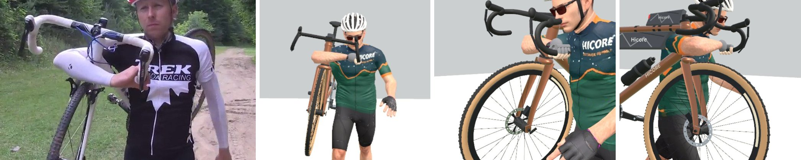
Gravel: Das Oberrohr liegt weiter vorn auf der Schulter, der Ellbogen ist außen neben dem Steuerrohr, und der Unterarm läuft quer vor dem Steuerrohr zur inneren Unterlenker-Hand (gemessen 7,3 cm vor der Steuerrohrachse, 6,8 cm Abstand). Der Lenker ist auf Kinnhöhe wie auf dem Foto. Beim MTB liegt der Flatbar-Griff direkt neben dem Steuerrohr, dort bleibt der Griff wie in 0.19.4.
Dein Foto und das Spiel aus ähnlicher Perspektive
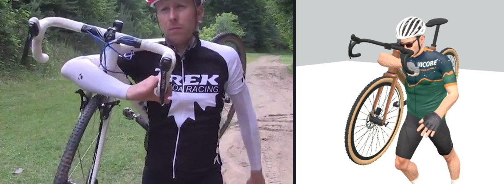
Vorne links, vorne, außen, hinten
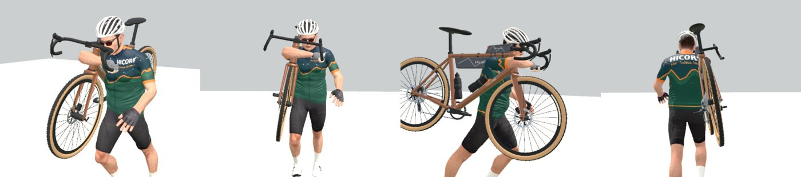
Die Gravel-Gabel war aus zwei Stücken gebaut, die an der Nahtstelle einen Absatz hatten. Dadurch sah sie aus wie eine Federgabel. Jetzt ist sie eine Carbon-Starrgabel aus einem Stück: gleichmäßig verjüngt und leicht nach vorn gebogen. Die MTB-Federgabel federt beim eigenen Fahrer: Vorderrad und Tauchrohre bewegen sich entlang der Lenkachse. Auf Schotter wippt sie etwa 6 bis 15 mm, bei Huckeln, auf Treppen und beim Bremsen taucht sie tiefer ein (maximal 6 cm). Auf Asphalt bleibt sie fast ruhig.
Gravel-Gabel vorher und nachher
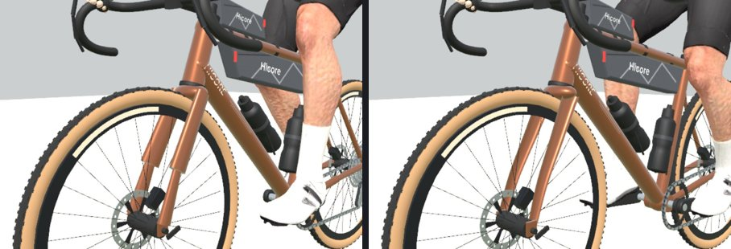
MTB-Gabel 5 cm eingefedert (Testbild)
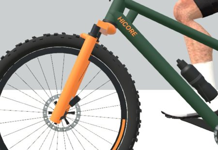
Wie auf deinem Cyclocross-Foto: Der Oberarm liegt unter dem Oberrohr im vorderen Dreieck, der Unterarm geht hinter dem Steuerrohr durch (gemessen 12,6 cm dahinter, beim MTB 15,7 cm, über dem Unterrohr, mit 9,5 cm Abstand zum Rohr), und erst dann greift die Hand den inneren Unterlenker. Das Rad liegt dafür etwas weiter vorn auf der Schulter und hängt vorn weniger tief.
Vorher (dein iPad-Bild, 0.19.3: Unterarm vor dem Steuerrohr)
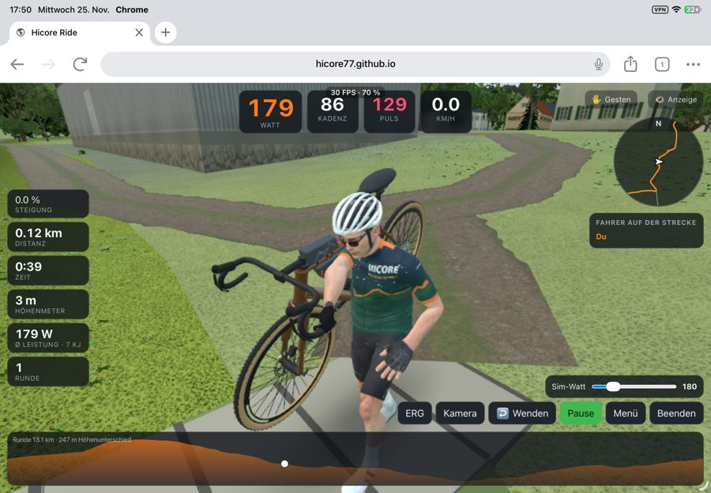
Nachher aus ähnlicher Perspektive
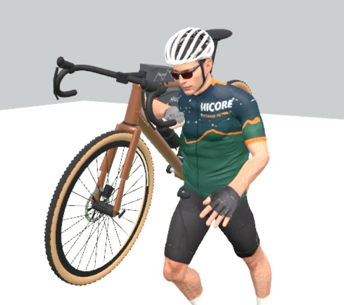
Gravel oben, MTB unten: vorne links, vorne, hinten, außen
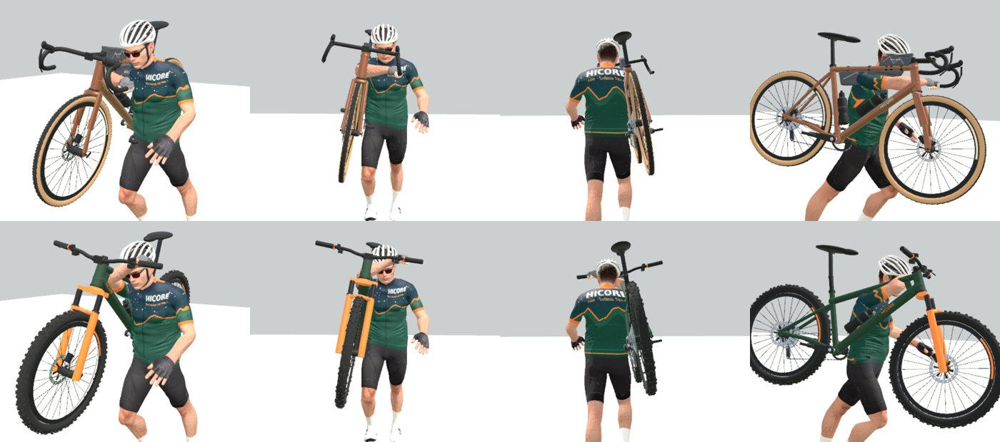
Der Oberkörper war beim Tragen seitlich gebogen, weil der Rücken noch zur Radmitte zielte, während der Fahrer schon neben dem Rad stand. Jetzt steht er aufrecht, die Schultern sind waagerecht. Der rechte Arm geht wie beim Cyclocross unter dem Oberrohr durchs Rahmendreieck, um das Steuerrohr herum und greift den inneren Unterlenker (MTB: Griff). Das Rad hängt vorn etwas tiefer, der Lenker ist vor der Brust statt auf Kopfhöhe.
Vorher (0.19.2): vorne, hinten, außen, innen
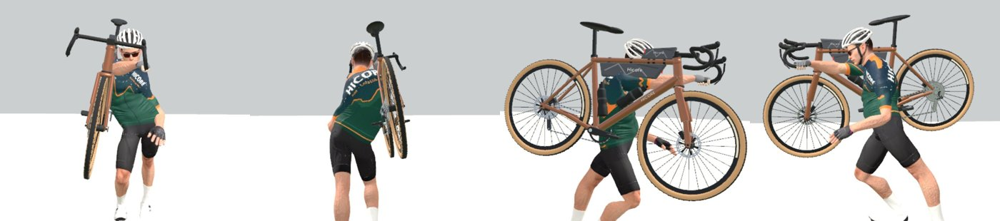
Nachher: oben Gravel, unten MTB (vorne, hinten, außen, innen nah)
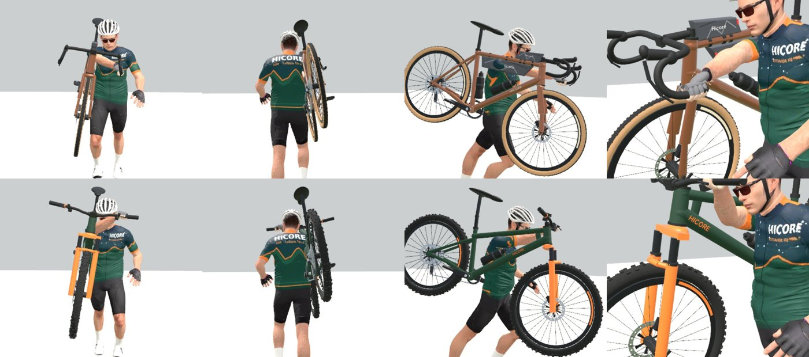
Der Zaun vor der Treppe an der Kammstraße (ca. 200 m südlich vom Ortskern Oybin, Richtung Hain) war kein OSM-Zaun, sondern ein zufällig gesetzter Deko-Weidezaun entlang der Startrunde. 0.19.1 hatte außerdem die falsche Treppe repariert (die mit 9 Stufen liegt in Jonsdorf). Jetzt stehen Deko-Zäune, Bäume und Schilder entlang der Runde nie mehr auf echten Wegen, Treppen oder Nebenstraßen (24 von 452 Zaunfeldern fallen weg). Ein Tor wäre hier unpassend gewesen: der Weidezaun gehört an der Stelle gar nicht hin. Beim Schultern ist der linke Arm jetzt wie auf deinem Cyclocross-Foto angewinkelt, die Hand locker vor der Hüfte, und schwingt mit dem Schritt.
Treppe Oybin Kammstraße vorher (Zaun quer davor)
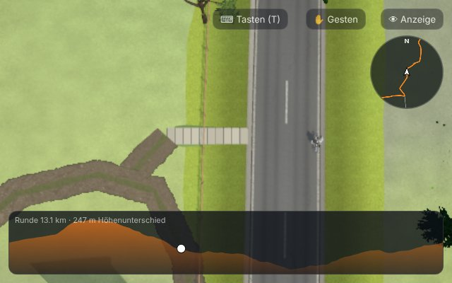
Nachher
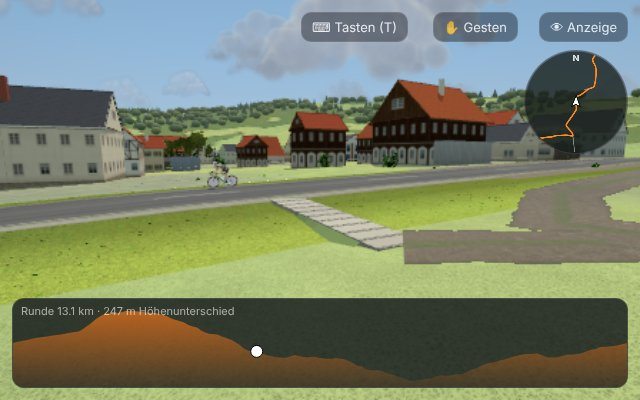
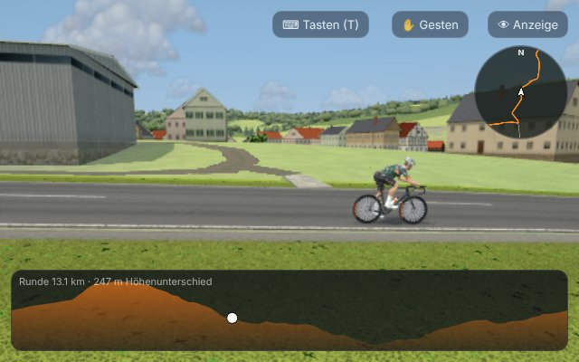
Schultern: linker Arm vorher (hängt lang herunter) und nachher (angewinkelt)
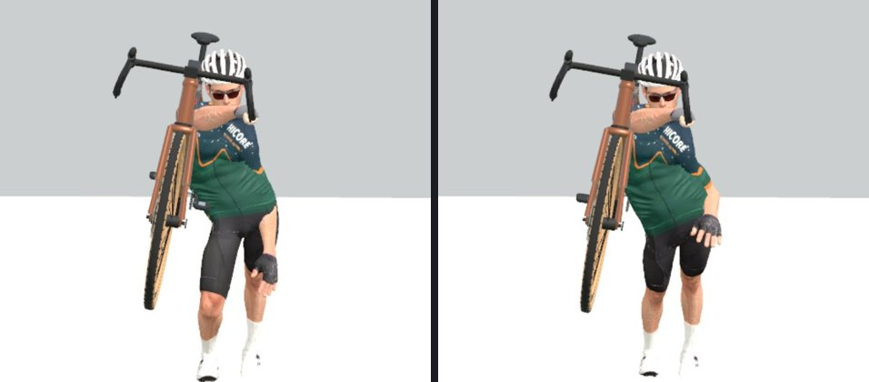
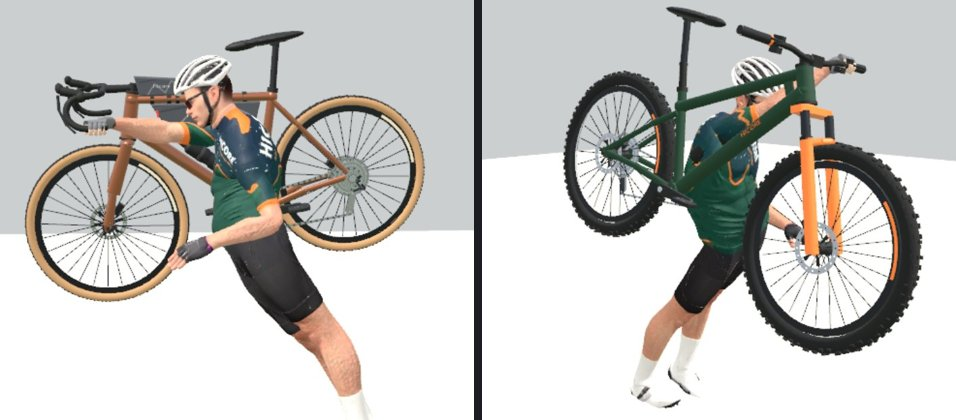
Der tschechische Teil (südlich der Lausche, Krompach, Jiřetín, Rand bei Varnsdorf) hat jetzt auch echte Einzelbäume, Sträucher, Waldmaske und Wiesen/Äcker aus Luftbild: rund 127.000 Bäume und 21.000 Sträucher mehr, insgesamt knapp 400.000. Quelle ist das Orthofoto des tschechischen Vermessungsamts (© ČÚZK), dort nur Farbbild ohne Infrarot, deshalb Vegetation über den Grünanteil. Nur ein schmaler Streifen in Polen bleibt wie bisher. Treppen folgen jetzt dem Gelände: jede Stufe einzeln, keine steckt mehr im Boden (vorher 186 von 483 Treppen mehr als 10 cm), wo eine Treppe übers flache Gelände ragt, liegt sie in einer Böschung und läuft oben in einer Erdrampe aus. Treppe Oybin Kammstraße ohne Zaun und gut sichtbar. Beim Schultern hängt der linke Arm jetzt locker neben dem Bein statt in die Hüfte gestemmt.
Tschechischer Teil von oben (Wald und Einzelbäume aus Luftbild © ČÚZK)
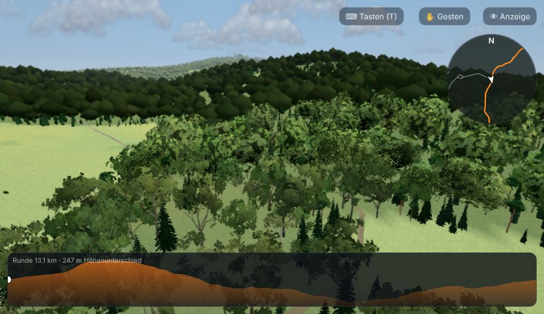
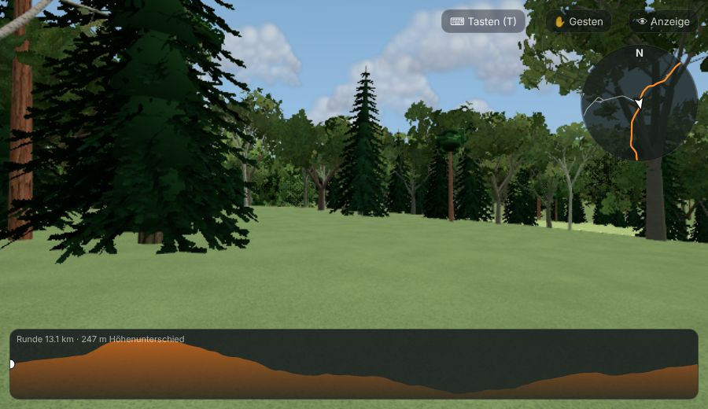
Treppe Oybin Kammstraße: kein Zaun, Stufen sichtbar; Schultern mit hängendem linken Arm
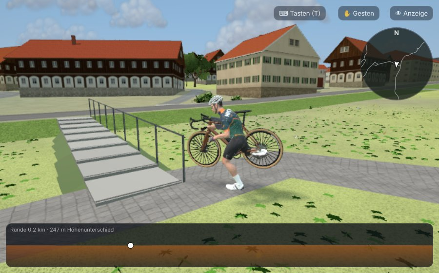
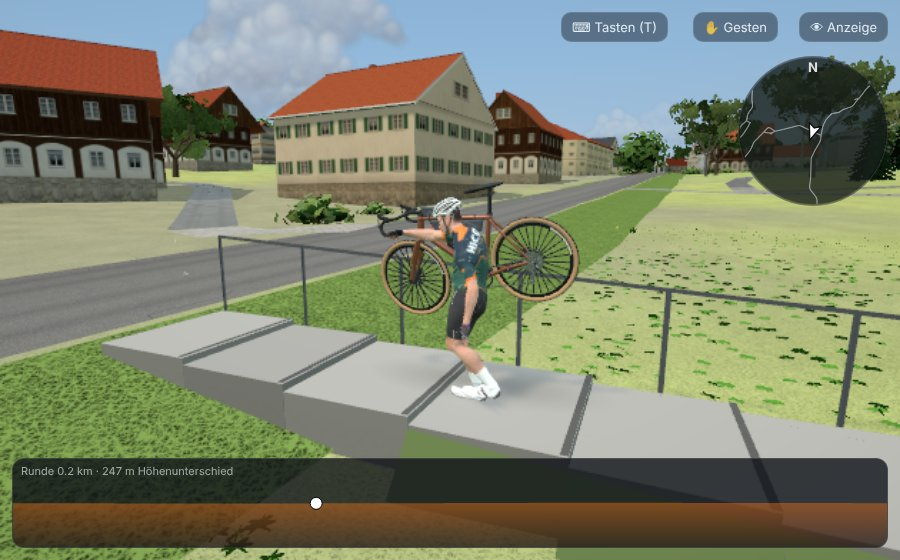
Felstreppe bei Jonsdorf mit Böschung, von oben mit Erdrampe am oberen Ende
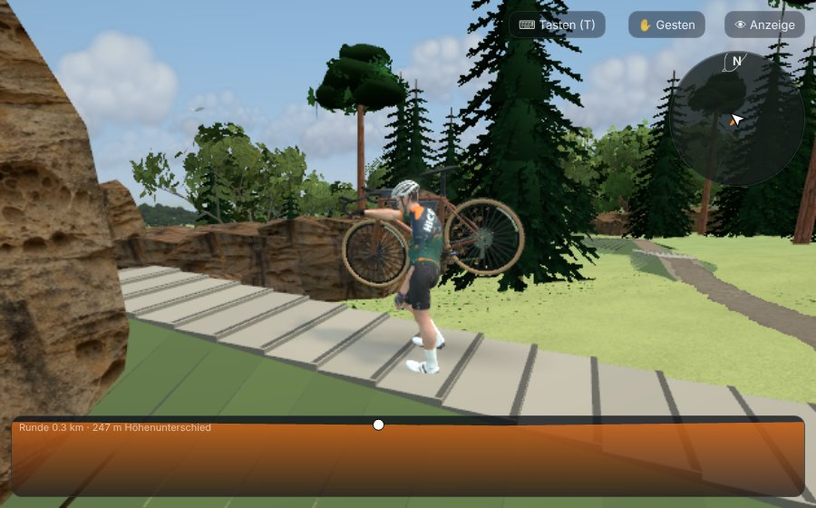
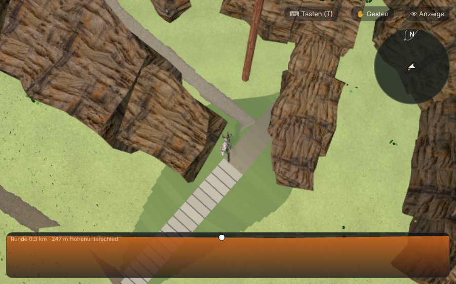
Was in Jonsdorf ging, gilt jetzt für den ganzen sächsischen Teil (ca. 350 km²): 270.422 Bäume und 49.215 Sträucher stehen dort, wo das Luftbild sie zeigt, mit echter Höhe und Laub/Nadel. Geschlossener Wald kommt aus der Waldmaske, tief im Wald ausgedünnt, an befahrbaren Waldwegen aber in voller Dichte. Äcker haben ihre echten Schläge (grün, gelb, kahl) statt Zufallsmuster. Dazu: Treppen mit dunklen Stufenkanten, Zäune stehen nicht mehr quer über Wegen und Treppen, beim Schultern hängt der linke Arm locker und die rechte Hand greift den Unterlenker. Tschechischer Teil noch wie bisher. Abschaltbar mit NO_DOPT.
Waldmaske und Acker-Zustand des ganzen Gebiets (rot Wald, schwarz ohne Luftbild). Luftbild © GeoSN, dl-de/by-2-0; Kronenhöhe Meta/WRI CC BY 4.0
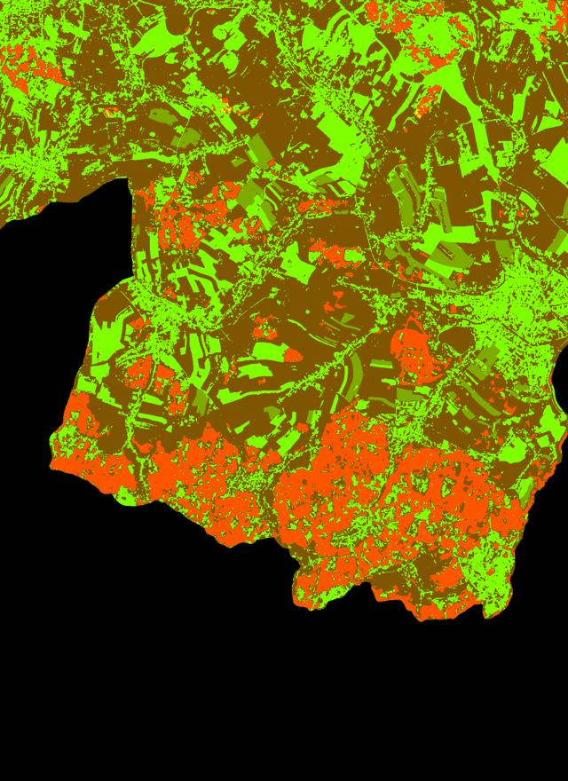
Luftbild und erkannte Acker-Schläge (grün, gelb, kahl)
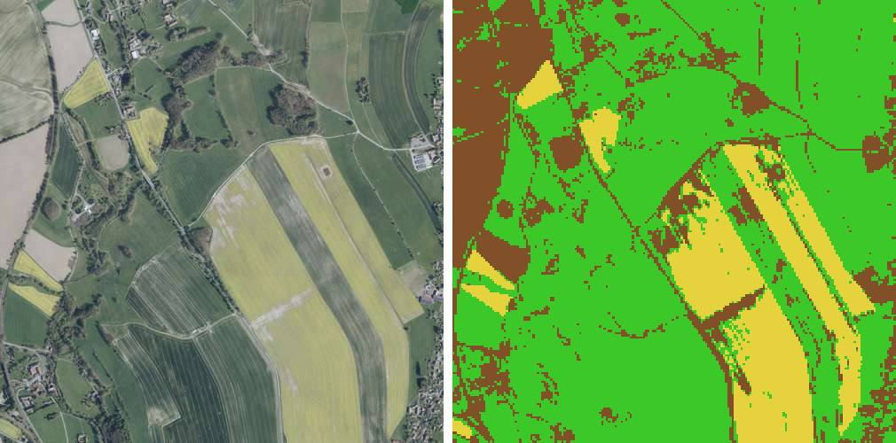
Erkannte Bäume bei Jonsdorf (gelb Laub, blau Nadel, lila Strauch, rot Wald)
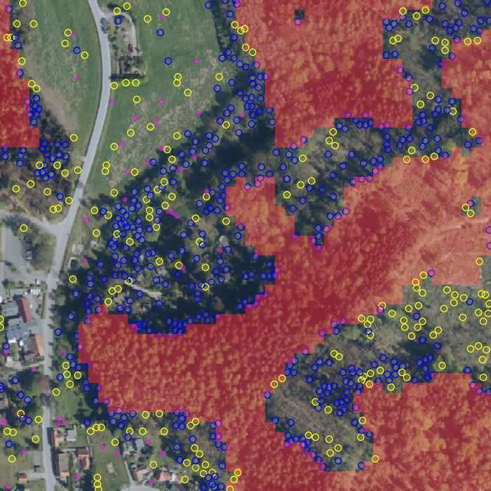
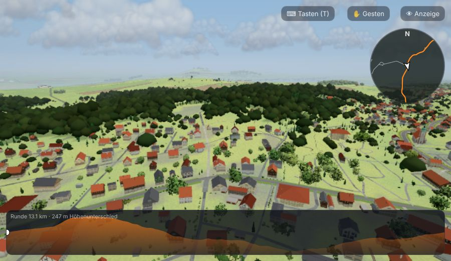
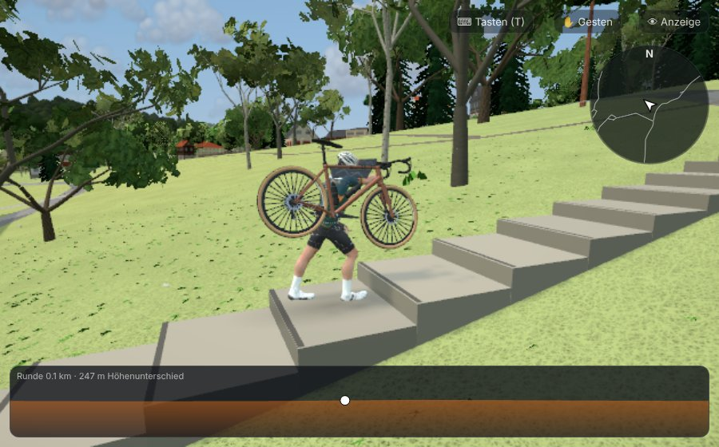
483 echte Treppen aus OpenStreetMap stehen jetzt als 3D-Stufen in der Welt und sind Teil des Wegenetzes. Mit dem Rennrad sind sie nicht wählbar. Mit dem Gravelbike steigst du davor im Laufen ab (rechtes Bein hinten über den Sattel), bei bis zu 3 Stufen greifst du Lenker und Oberrohr und hebst das Rad drüber, bei längeren Treppen schulterst du es wie im Cyclocross und läufst hoch oder runter, oben bzw. unten sitzt du wieder auf. Das Tempo auf der Treppe hängt von deiner Leistung ab, der Trainer bekommt währenddessen 0 %. Mit dem MTB fährst du Treppen bergab stehend mit waagrechten Kurbeln, bergauf wird getragen. Dazu: Die FIT-Datei enthält im Zittauer Gebirge jetzt echte GPS-Koordinaten und Höhen, Strava zeigt die Fahrt auf den echten Straßen.
Gravel, 25 Stufen: Rad geschultert
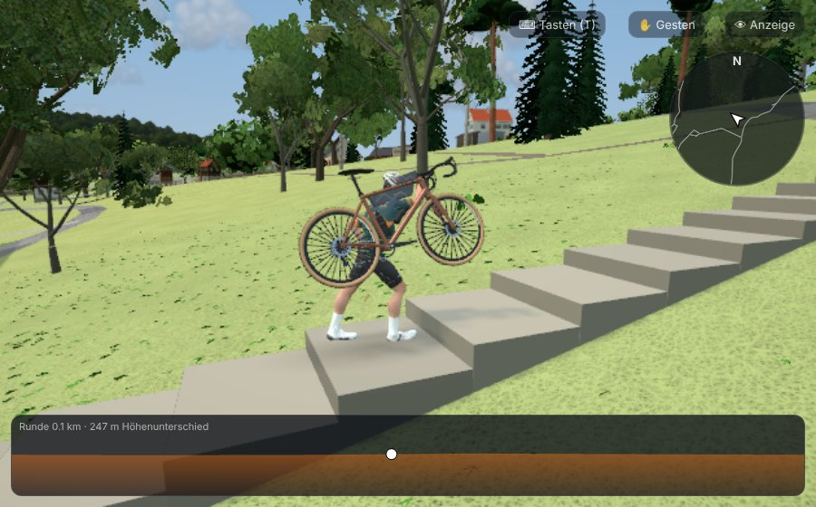
Treppe mit Handlauf
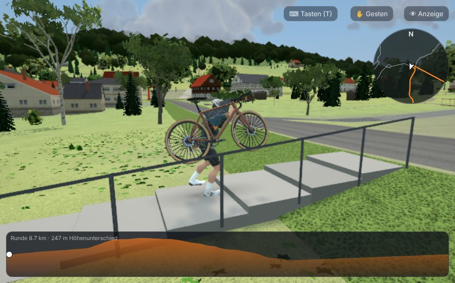
3 Stufen: Rad an Lenker und Oberrohr drübertragen
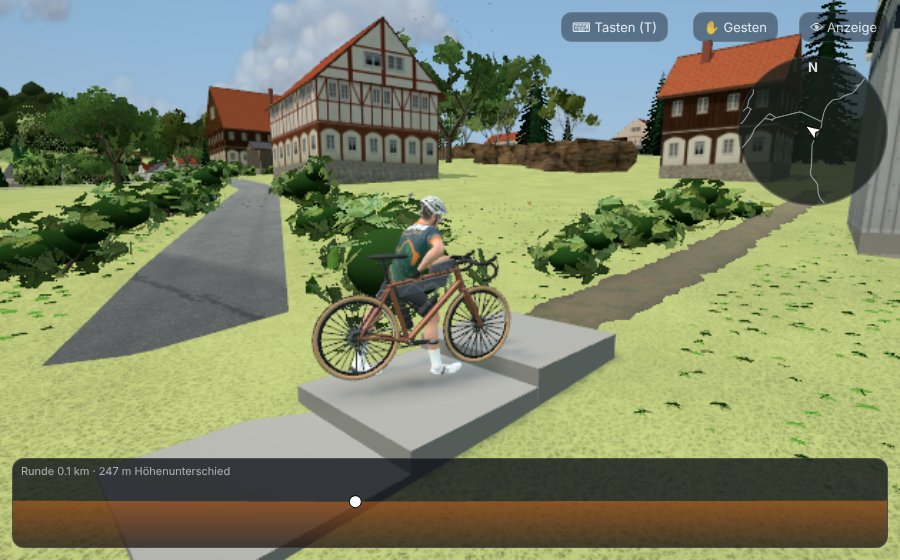
MTB fährt die Treppe runter
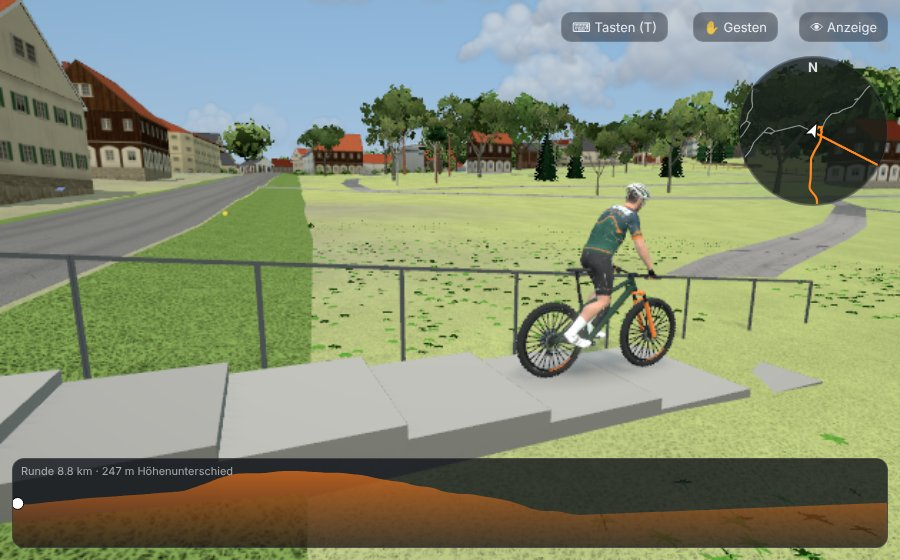
Auf Feldwegen durch Äcker wuchsen die Ackerpflanzen mitten auf dem Weg, weil nur der Abstand zu Straßen geprüft wurde (gemeldet am Feldweg Richtung Hainewalde). Jetzt bleibt jeder Weg frei, mit 4 m Rand ohne Feldpflanzen. Äcker passen jetzt zur Bodenfarbe: umgepflügt kahl, Stoppelfeld kurz und strohfarben, Wintersaat kurz und grün, statt eines hohen grünen Teppichs auf allen Feldern. Halb so viele Halme in Feldnähe, das hilft auch der Bildrate. Das Wackeln auf Wegen ist schwächer und kommt in zufälligen Phasen: mal ein paar Sekunden ruhig, mal länger ruppig, ab und zu ein einzelner Huckel.
Vorher: Feldweg zwischen Spitzkunnersdorf und Hainewalde
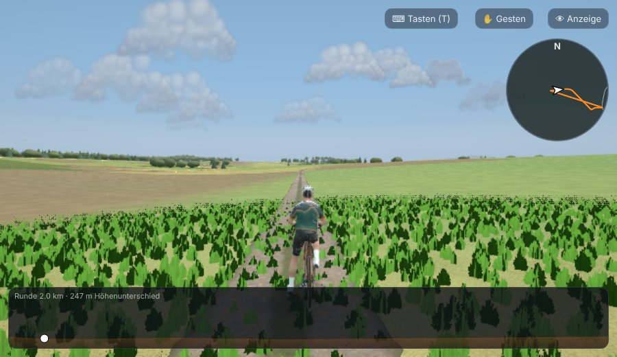
Nachher
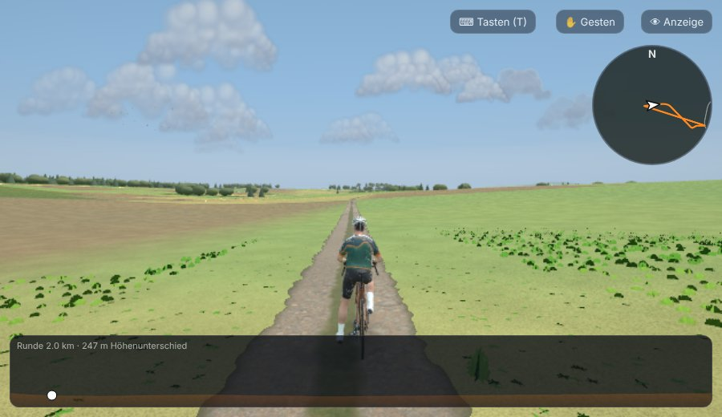
Rund um Jonsdorf stehen die Bäume jetzt dort, wo sie wirklich stehen: aus dem Luftbild Sachsen (DOP20) und einer Kronenhöhenkarte erkannt, mit echter Höhe und Laub- oder Nadelbaum. Geschlossener Wald kommt aus einer eigenen Waldmaske, im Ort und auf den Wiesen stehen nur noch die echten Einzelbäume statt der groben Satelliten-Waldflecken. Zusammen 23.640 Bäume, abschaltbar mit NO_DOPT.
Luftbild mit erkannten Bäumen (gelb Laub, blau Nadel, rot Wald). Luftbild © GeoSN, dl-de/by-2-0
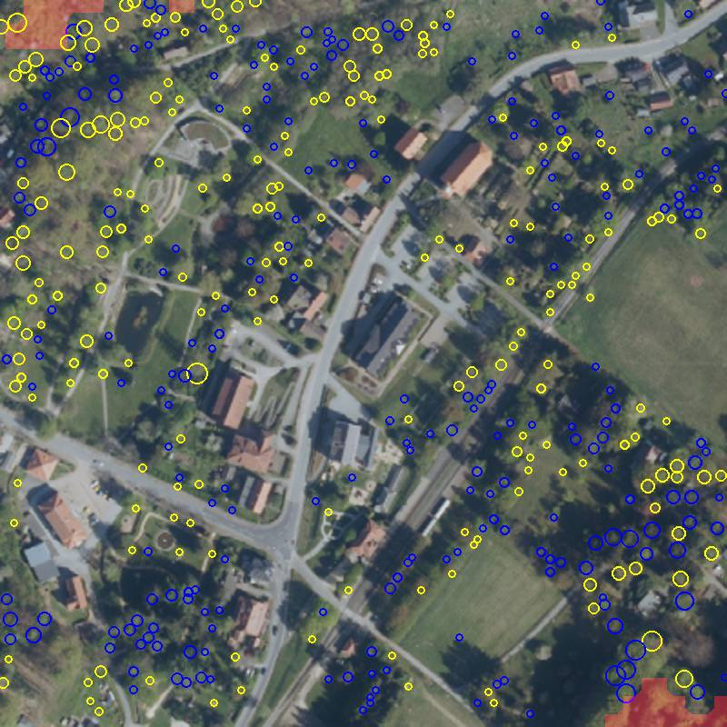
Jonsdorf von oben: vorher (Satelliten-Waldflecken)
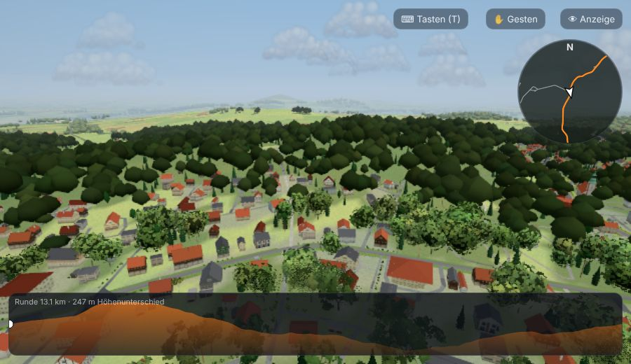
Jetzt: echte Einzelbäume, Wald nur wo wirklich Wald ist
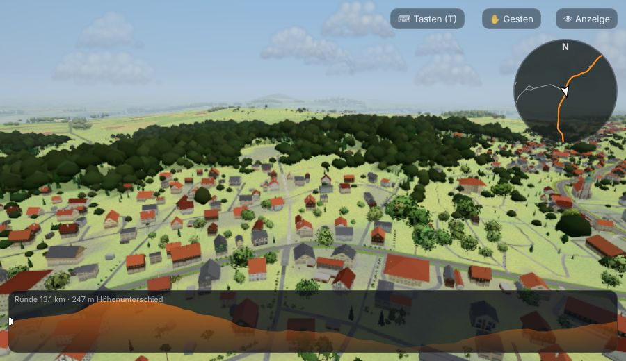
Auf der Straße im Ort
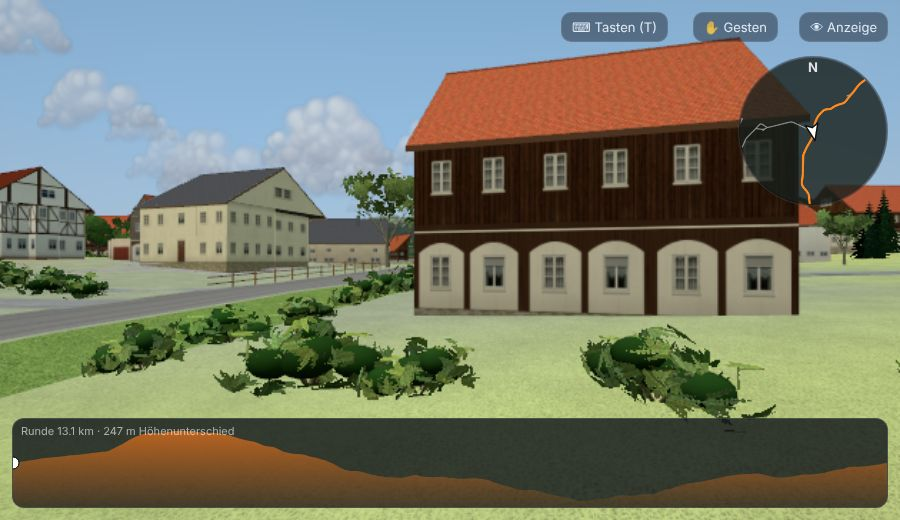
Auf Schotter, Feld- und Waldwegen fährt das Gravelbike nicht mehr schnurgerade: leichtes Schlängeln, kleine Stöße und Wackler je nach Untergrund, das MTB federt das ruhiger weg, auf Asphalt bleibt alles wie bisher. Pfützen entstehen erst mit der Dauer des Regens (Regen ca. 18 min bis voll, Gewitter schneller) und trocknen danach langsam ab (ca. 45 min), auf Straßen und Wegen. Der Fahrer weicht Pfützen aus, wenn der Weg breit genug ist, sonst geht es mittendurch und es spritzt seitlich. Erdige Wald- und Feldwege werden nach Regen dunkel und schlammig, ab und zu fliegt Matsch vom Reifen (beim MTB mehr) und selten rutscht das Hinterrad kurz weg, ohne Sturz.
Waldweg bei Jonsdorf nach längerem Regen
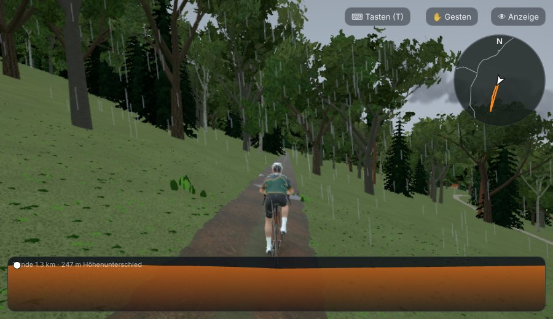
Von oben: Pfütze auf dem Weg
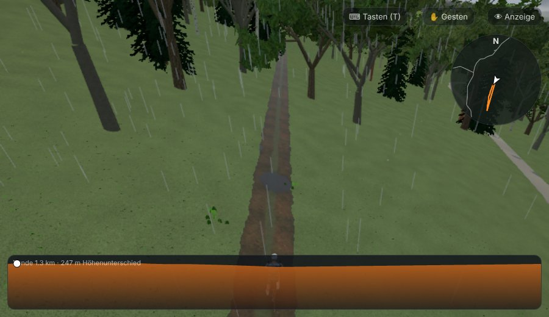
Direkt nach dem Durchfahren einer Pfütze
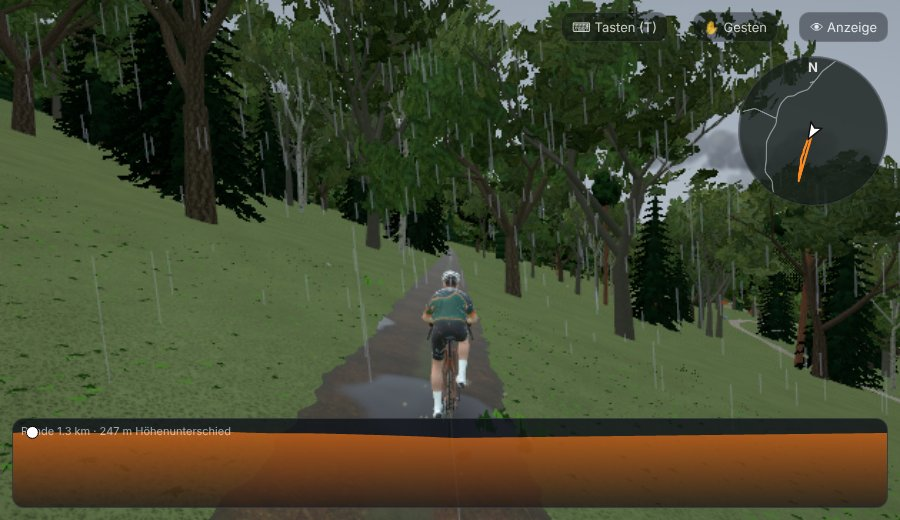
Höhen, Gebäude (jetzt rund 53.600) und Landbedeckung reichen bis an den Rand des Wegenetzes, statt dort leer aufzuhören. Neu am echten Ort aus OpenStreetMap/Overture: Felswände und Felsblöcke im Zittauer Gebirge, Hecken, Baumreihen, Gebüsch, Obstwiesen, Holzzäune, Mauern, Stützmauern sowie Industriegelände mit Zaun und Hallen. Die Welt ist in 2-km-Kacheln geteilt: geladen wird nur die Umgebung am Start, der Rest kommt während der Fahrt nach und wird hinter dir wieder freigegeben. Ab und zu sind Wanderer auf Wald-, Feld- und Fußwegen unterwegs und treten zur Seite, wenn du kommst.
Folgt auf die nächste Kreuzung innerhalb von ca. 150 m gleich die übernächste, steht sie klein unter dem Hinweis („Danach in … m“) und ist schon wählbar. Sie folgt der gewählten Richtung an der ersten Kreuzung: wählst du dort Rechts, zeigt sie die Kreuzung auf dem rechten Ast; kommt auf dem gewählten Weg nichts, verschwindet sie.
Seit 0.16.1 hat die vorgewählte Hauptstraße die eigene Wahl kurz vor der Kreuzung wieder überschrieben, man fuhr trotzdem geradeaus (gemeldet an den Kälbersträuchern). Behoben, mit eigenem Test für diese Kreuzung (links, rechts, geradeaus).
An Kreuzungen ist jetzt die durchgehende Straße vorgewählt (gleicher Name, höhere Klasse, möglichst gerade), nur wer abbiegen will, drückt. Abzweige in Wege erscheinen dezent und erst kurz vorher. Wege und Nebenstraßen laufen bis an den Fahrbahnrand statt vor dem Grünstreifen zu enden. Nebenstraßen-Asphalt und Schotter ohne sichtbare Kachelwiederholung (Flecken, Flicken, Risse). Fahrer neigen sich in Kurven, das Vorderrad lenkt leicht ein. Gravel und MTB auf grobem Untergrund deutlich langsamer. Ab ca. 12 % zeitweise Wiegetritt.
Vorher: der Pfad rechts endet vor dem Grünstreifen

Jetzt: der Pfad läuft bis an die Fahrbahn
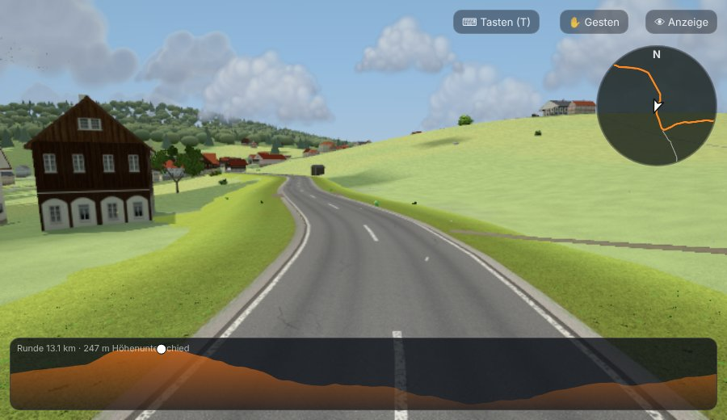
Dieselbe Stelle von oben
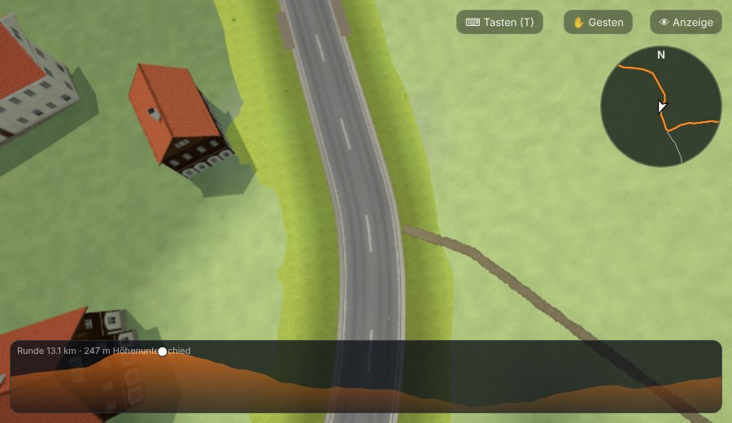
Nebenstraße: Asphalt mit Flecken, Flickstellen und Rissen statt gleichförmiger Kacheln

Schotterweg
Wiegetritt am steilen Berg: Gravel (Hände auf den Hoods) und MTB

Die Radwahl im Menü (Welt, Fahrrad) zeigt jetzt das passende Rad mit eigener Sitzhaltung. Gravel: Bronze/Kupfer metallic, Skinwall-Reifen, höherer und kürzerer Rahmen, breiterer Lenker mit Flare, Hoods nach innen gedreht, Rahmen- und Oberrohrtasche, zwei schwarze Flaschen. MTB: mattes Dunkelgrün, orange Federgabel, Stollenreifen, gerader Lenker, aufrechte Haltung. Studiobilder ohne Welt.
Gravelbike von der Seite: aufrechter als auf dem Rennrad, Hände auf den Hoods
Gravelbike schräg von vorn: Taschen mit Hicore-Schriftzug, roter Zipper
Von vorn: Unterlenker nach außen ausgestellt (Flare), Hoods oben nach innen geneigt
Hände auf den Hoods, greifen genau am Griff
Mountainbike von der Seite
Mountainbike schräg: orange Federgabel, Stollenreifen

Gerader Lenker mit Griffen, Bremshebeln und orangen Klemmringen

Straßen, Nebenstraßen und rund 1.900 km Feld-, Wald-, Fuß- und Radwege sind jetzt ein zusammenhängendes Netz. An jeder Kreuzung, auch im Wald, kommt ein Abbiegehinweis. Neu im Menü (Welt): Fahrrad. Das Rennrad biegt nur in Straßen und asphaltierte Wege ab, Gravel und Mountainbike überall. Der Rollwiderstand hängt von Rad und Untergrund ab. Auf Waldpfaden gibt es Wurzelstellen, die das Gravelbike stark bremsen. Brücken auf Wegen haben jetzt ein Holz- oder Betondeck mit Geländer.
Abbiegehinweis von der Hainstraße in einen Wiesenpfad (Mountainbike)
Nach dem Abbiegen: Fahrt auf dem Pfad

Holzbrücke auf einem Fußweg
Wurzelstelle auf einem Waldpfad
Rund 1.900 km Wege aus OpenStreetMap neu dabei: Feld- und Waldwege, Wiesenpfade, Fuß- und Radwege (ohne Gehsteige und Hofzufahrten). Befahrbar sind sie noch nicht. Alle Nebenwege haben jetzt eine Textur nach dem echten Untergrund aus OSM (Asphalt, Pflaster, Beton, Schotter, Erde, Gras, Waldboden, Fels), Texturen von Poly Haven. Feldwege mit grüner Mitte, Waldwege mit Waldboden, keine Bäume mehr mitten auf Wegen. Bei Schnee verschwinden sie wie der übrige Boden. Alter Stand zum Vergleich: ?oldways=1
Feldweg mit Grasnarbe in der Mitte
Erdweg am Waldrand (Waldboden)

Schotterweg mit ausgefransten Rändern

Asphaltierter Fußweg
Draufsicht Jonsdorf: Wege im Netz

Vorher: Nebenwege als einfarbige helle Bänder

Schnellerer Start: Fahrer- und Radmodell laden als eigene Dateien, die Startseite ist 6 MB leichter. Autos und Shader werden im Ladebildschirm vorbereitet, damit beim ersten Auto nichts ruckelt. Neu im Menü: Auflösung automatisch anpassen (die FPS-Anzeige zeigt die Prozent). Ferne Mitfahrer verlieren Kleinteile, auf Tablets werden große Fahrzeugtexturen verkleinert.
Rücklichter nachts: sitzen jetzt genau auf den roten Lampen und folgen ihrer Form, mit Glow
Scheinwerfer nachts: an der Lampenposition statt davor schwebend
Fahrende Autos bei Schnee: Dach weiß, Scheiben frei

Kreuzung Waltersdorf/Bertsdorf: nur noch eine Einmündung und ein Wegweiser (der blaue Streifen daneben ist ein Bach)

Laubbäume bei Schnee und Gegenlicht, vorher
Nachher: das gelbgrüne Leuchten gedämpft

Neu im Menü: Wetter Schneefall und Graupel, dazu die Schneelage (keine, Flecken, angezuckert, viel, Tauwetter) und Straßen geräumt oder festgefahren. Jede Kombination geht. Bei echtem Wetter stellt sich die Schneelage nach der Schneehöhe von Open-Meteo selbst ein.
Viel Schnee bei blauem Himmel, Straße geräumt: Dächer weiß, Schatten bläulich aufgehellt
Dasselbe aus der Luft: Wald mit weißen Oberseiten, Gras unter dem Schnee verschwunden

Schneefall, Straße festgefahren: weiß mit Fahrspuren, grauer diesiger Himmel, Flocken
Angezuckert: dünne Schicht, Gras und Dachziegel schimmern durch

Tauwetter: Reste auf flachen und schattigen Stellen, Straße nass
Schneeflecken: nur vereinzelte Reste, in der Höhe (Lausche, Kamm) bleibt mehr liegen
Oben bisherige Bodentexturen, unten neu (Poly Haven): Asphalt dunkler und unregelmäßig gemischt, Wiese, Bankett

Kreuzung von oben, oben alt, unten neu: die Kreuzungsfläche hat jetzt dieselbe durchgehende Textur wie die Straße
Fernsicht über Oybin aus der Luft: Wald und Orte jetzt bis ca. 6 km statt Dunst ab 1,7 km
Blick von der Lausche-Straße: geschlossener Wald auf den Hängen, Häuser in der Ferne
Kirche Hainewalde nach deinen Fotos: Chor mit Spitzbogenfenstern und grauen Eckquadern

Turm mit Quaderecken, Uhren, Glockengeschoss, Haube, Laterne und Wetterfahne

Kanitz-Kyaw'sche Gruft als 3D-Modell aus den Fotos (Higgsfield)
Parks und Rasen am Ring nach OSM, Fuß- und Radwege sichtbar, lockere Baumgruppen statt Pflaster

Bahnübergang Hörnitzer Straße: Halbschranken unten, Lichtzeichen rot, Läutewerk; der Fahrer hält davor

Regionalzug fährt durch (zweiteiliger Triebwagen, ohne echtes Logo)
Triebwagen von vorn (Bug mit Scheibe, Lichtern und Zierstreifen)
Eisenbahnbrücke über die B 96 Neusalzaer Straße (nach OSM)

Eisenbahnbrücke über die Oststraße in Zittau
Sicherer am Seil, Rucksack-Wanderin und Marlies jetzt alle mit Skelett

Kletterer jetzt als Figur mit Skelett, greift und tritt abwechselnd

Am Kelchstein kann man neben der Wanderin anhalten und per Sprechknopf mit ihr reden

Jetzt zufällig platziert, alles steht sauber auf der Straße, Polizist als Figur mit Skelett

Von links: Spaziergängerin stehend, Läufer beim Gehen, Spaziergängerin beim Gehen, Läufer beim Rennen
Links Gehen 5 km/h, Mitte Joggen 11 km/h, rechts Rennen 19 km/h